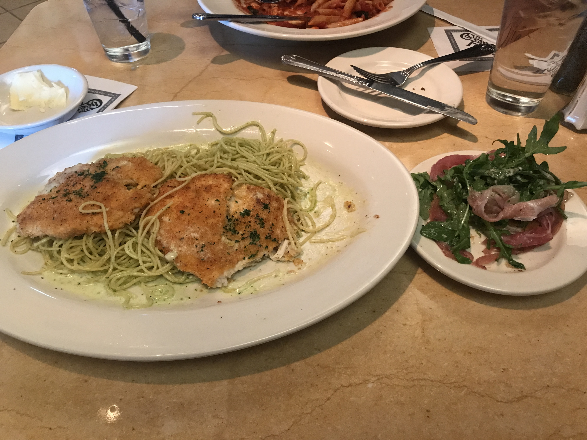

I am an ATEC major interested in media studies, design, and animation. This is my second year at UT Dallas. Some of my favorite things to do are watching movies, learning new things, and spending time with my boyfriend. Some of my goals right now are to read more books and improve my ability to focus.
